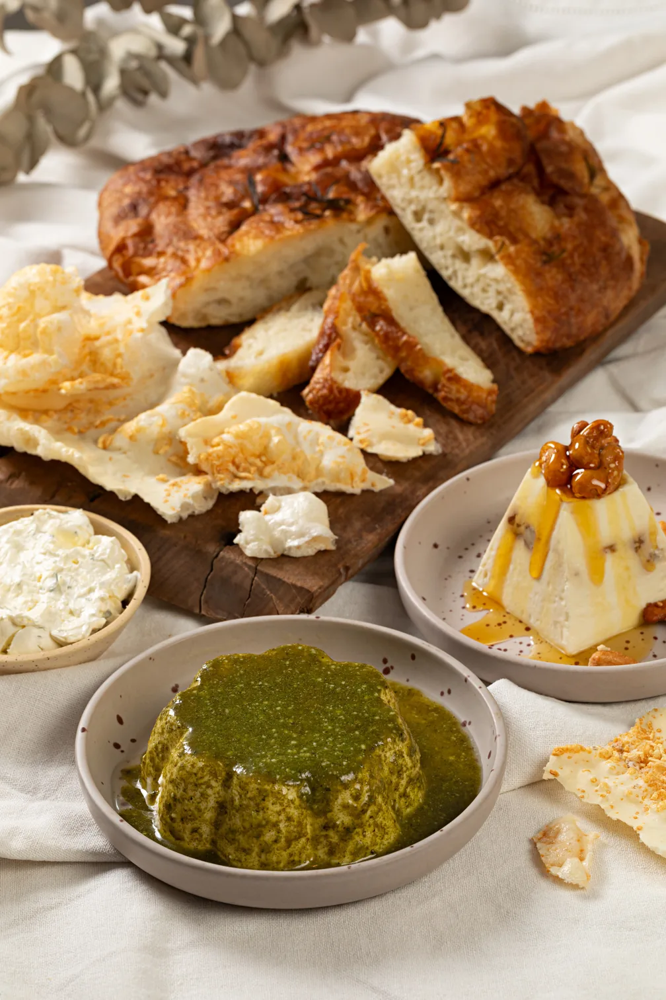

Kit Mais Pedidos
R$ 287
- Serve
- 2 pessoas
- O que vem
- Focaccia tradicional pequena
- Mousse de chévre
- Soft cheese
- Manteiga noisette
- Polvilho
Pedido mínimo de R$ 95. Entrega de segunda a sábado no Rio de Janeiro.

R$ 287
Pedido mínimo de R$ 95. Entrega de segunda a sábado no Rio de Janeiro.
Serve 2 ou 4 pessoas
R$ 382,50para 2 pessoas. Para 4 pessoas sai por R$ 553,50
Serve 4 ou 6 pessoas
R$ 557para 4 pessoas. Para 6 pessoas sai por R$ 595
Serve 8 a 10 pessoas
R$ 964